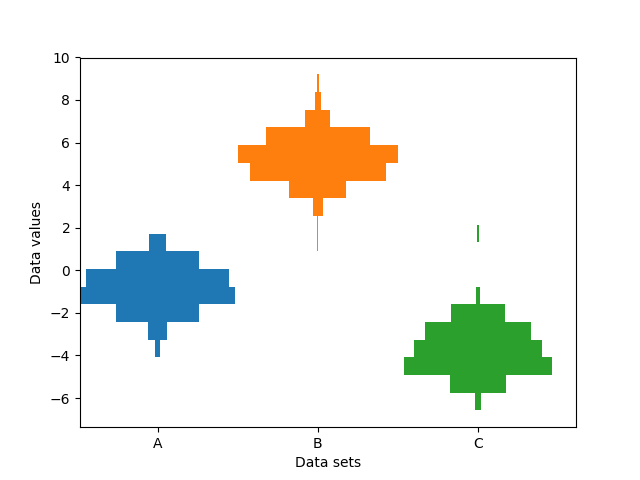

This example plots horizontal histograms of different samples along a categorical x-axis. Additionally, the histograms are plotted to be symmetrical about their x-position, thus making them very similar to violin plots.
To make this highly specialized plot, we can’t use the standard hist
method. Instead we use barh to draw the horizontal bars directly. The
vertical positions and lengths of the bars are computed via the
np.histogram function. The histograms for all the samples are
computed using the same range (min and max values) and number of bins,
so that the bins for each sample are in the same vertical positions.
Selecting different bin counts and sizes can significantly affect the shape of a histogram. The Astropy docs have a great section on how to select these parameters: http://docs.astropy.org/en/stable/visualization/histogram.html
import numpy as np
import matplotlib.pyplot as plt
np.random.seed(19680801)
number_of_bins = 20
# An example of three data sets to compare
number_of_data_points = 387
labels = ["A", "B", "C"]
data_sets = [np.random.normal(0, 1, number_of_data_points),
np.random.normal(6, 1, number_of_data_points),
np.random.normal(-3, 1, number_of_data_points)]
# Computed quantities to aid plotting
hist_range = (np.min(data_sets), np.max(data_sets))
binned_data_sets = [
np.histogram(d, range=hist_range, bins=number_of_bins)[0]
for d in data_sets
]
binned_maximums = np.max(binned_data_sets, axis=1)
x_locations = np.arange(0, sum(binned_maximums), np.max(binned_maximums))
# The bin_edges are the same for all of the histograms
bin_edges = np.linspace(hist_range[0], hist_range[1], number_of_bins + 1)
centers = 0.5 * (bin_edges + np.roll(bin_edges, 1))[:-1]
heights = np.diff(bin_edges)
# Cycle through and plot each histogram
fig, ax = plt.subplots()
for x_loc, binned_data in zip(x_locations, binned_data_sets):
lefts = x_loc - 0.5 * binned_data
ax.barh(centers, binned_data, height=heights, left=lefts)
ax.set_xticks(x_locations)
ax.set_xticklabels(labels)
ax.set_ylabel("Data values")
ax.set_xlabel("Data sets")
plt.show()
Total running time of the script: ( 0 minutes 0.040 seconds)